图的遍历
树代表的是“一对多”的关系，而图则具有更高的自由度，可以表示任意的“多对多”关系。因此，我们可以把树看作图的一种特例。显然，树的遍历操作也是图的遍历操作的一种特例。
图和树都需要应用搜索算法来实现遍历操作。图的遍历方式也可分为两种：「广度优先遍历」和「深度优先遍历」。
广度优先遍历
广度优先遍历是一种由近及远的遍历方式，从某个节点出发，始终优先访问距离最近的顶点，并一层层向外扩张。如下图所示，从左上角顶点出发，首先遍历该顶点的所有邻接顶点，然后遍历下一个顶点的所有邻接顶点，以此类推，直至所有顶点访问完毕。
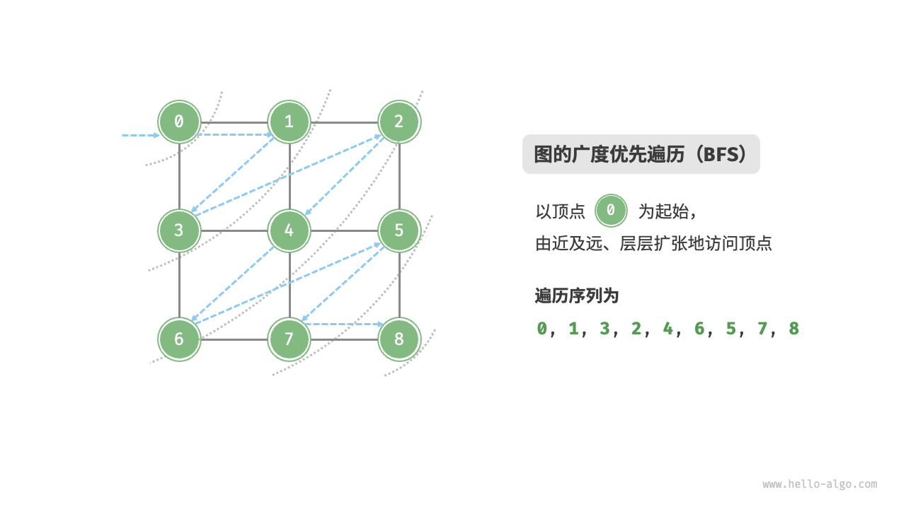
算法实现
BFS 通常借助队列来实现，代码如下所示。队列具有“先入先出”的性质，这与 BFS 的“由近及远”的思想异曲同工。
- 将遍历起始顶点
startVet加入队列，并开启循环。 - 在循环的每轮迭代中，弹出队首顶点并记录访问，然后将该顶点的所有邻接顶点加入到队列尾部。
- 循环步骤
2.，直到所有顶点被访问完毕后结束。
为了防止重复遍历顶点，我们需要借助一个哈希表 visited 来记录哪些节点已被访问。
"Python"
def graph_bfs(graph: GraphAdjList, start_vet: Vertex) -> list[Vertex]: """广度优先遍历""" // 使用邻接表来表示图，以便获取指定顶点的所有邻接顶点 // 顶点遍历序列 res = [] // 哈希表，用于记录已被访问过的顶点 visited = set[Vertex]([start_vet]) // 队列用于实现 BFS que = deque[Vertex]([start_vet]) // 以顶点 vet 为起点，循环直至访问完所有顶点 while len(que) > 0: vet = que.popleft() // 队首顶点出队 res.append(vet) // 记录访问顶点 // 遍历该顶点的所有邻接顶点 for adj_vet in graph.adj_list[vet]: if adj_vet in visited: continue // 跳过已被访问的顶点 que.append(adj_vet) // 只入队未访问的顶点 visited.add(adj_vet) // 标记该顶点已被访问 // 返回顶点遍历序列 return res"C++"
/* 广度优先遍历 */ // 使用邻接表来表示图，以便获取指定顶点的所有邻接顶点 vector<Vertex *> graphBFS(GraphAdjList &graph, Vertex *startVet) { // 顶点遍历序列 vector<Vertex *> res; // 哈希表，用于记录已被访问过的顶点 unordered_set<Vertex *> visited = {startVet}; // 队列用于实现 BFS queue<Vertex *> que; que.push(startVet); // 以顶点 vet 为起点，循环直至访问完所有顶点 while (!que.empty()) { Vertex *vet = que.front(); que.pop(); // 队首顶点出队 res.push_back(vet); // 记录访问顶点 // 遍历该顶点的所有邻接顶点 for (auto adjVet : graph.adjList[vet]) { if (visited.count(adjVet)) continue; // 跳过已被访问的顶点 que.push(adjVet); // 只入队未访问的顶点 visited.emplace(adjVet); // 标记该顶点已被访问 } } // 返回顶点遍历序列 return res; }"Java"
/* 广度优先遍历 */ // 使用邻接表来表示图，以便获取指定顶点的所有邻接顶点 List<Vertex> graphBFS(GraphAdjList graph, Vertex startVet) { // 顶点遍历序列 List<Vertex> res = new ArrayList<>(); // 哈希表，用于记录已被访问过的顶点 Set<Vertex> visited = new HashSet<>(); visited.add(startVet); // 队列用于实现 BFS Queue<Vertex> que = new LinkedList<>(); que.offer(startVet); // 以顶点 vet 为起点，循环直至访问完所有顶点 while (!que.isEmpty()) { Vertex vet = que.poll(); // 队首顶点出队 res.add(vet); // 记录访问顶点 // 遍历该顶点的所有邻接顶点 for (Vertex adjVet : graph.adjList.get(vet)) { if (visited.contains(adjVet)) continue; // 跳过已被访问的顶点 que.offer(adjVet); // 只入队未访问的顶点 visited.add(adjVet); // 标记该顶点已被访问 } } // 返回顶点遍历序列 return res; }
代码相对抽象，建议对照下图来加深理解。
"<1>" 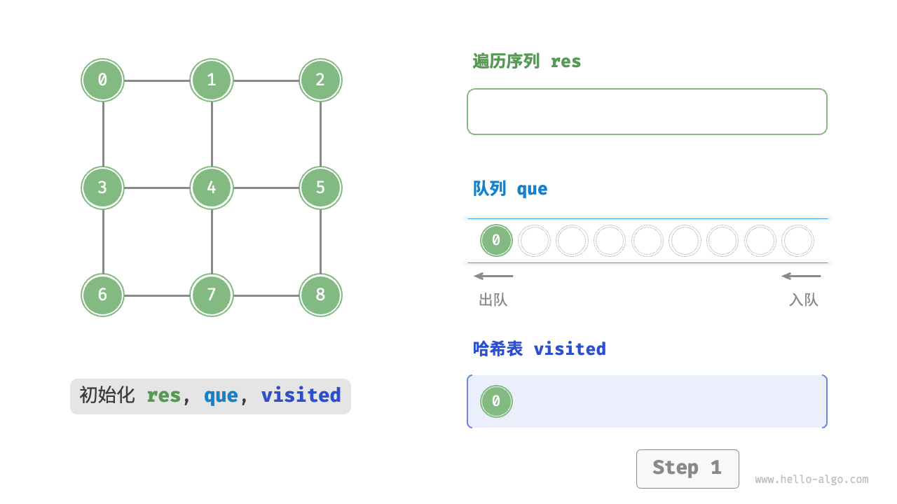
"<2>" 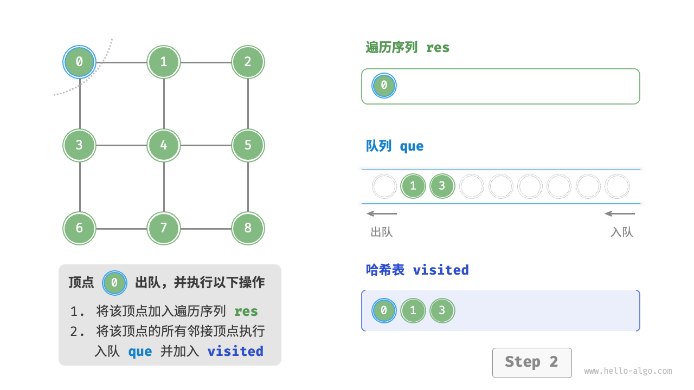
"<3>" 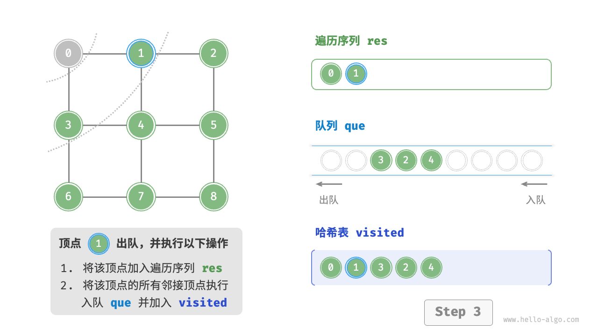
"<4>" 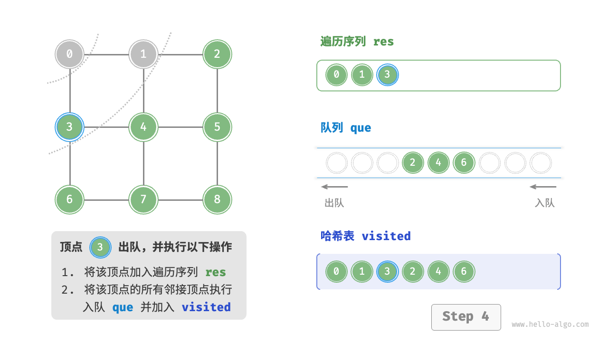
"<5>" 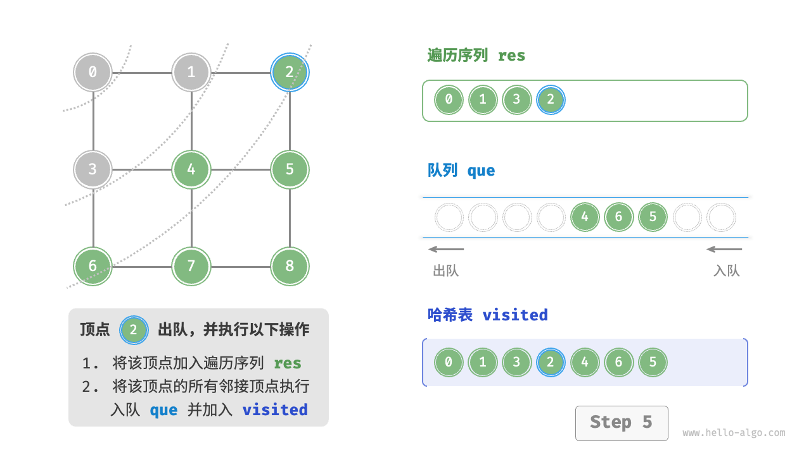
"<6>" 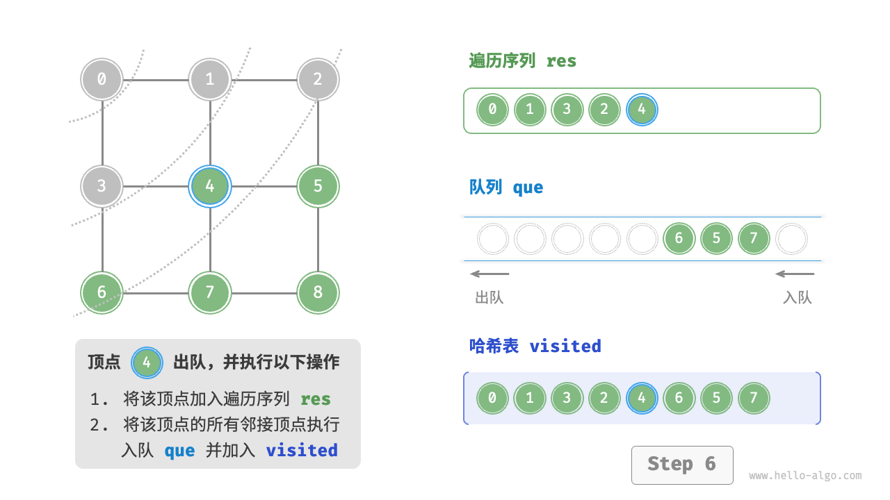
"<7>" 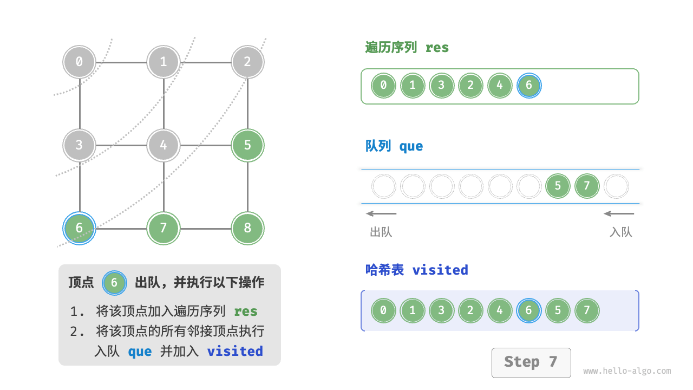
"<8>" 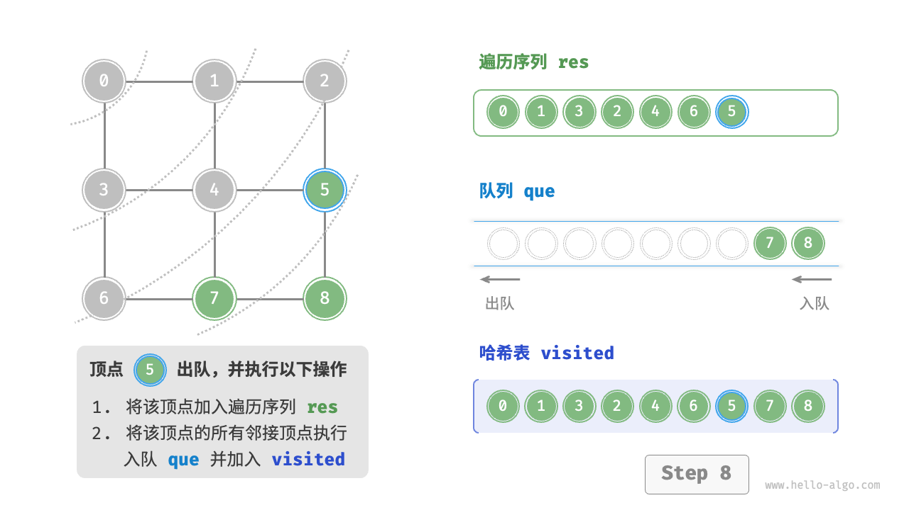
"<9>" 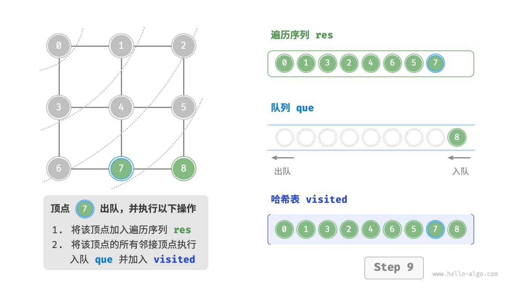
"<10>" 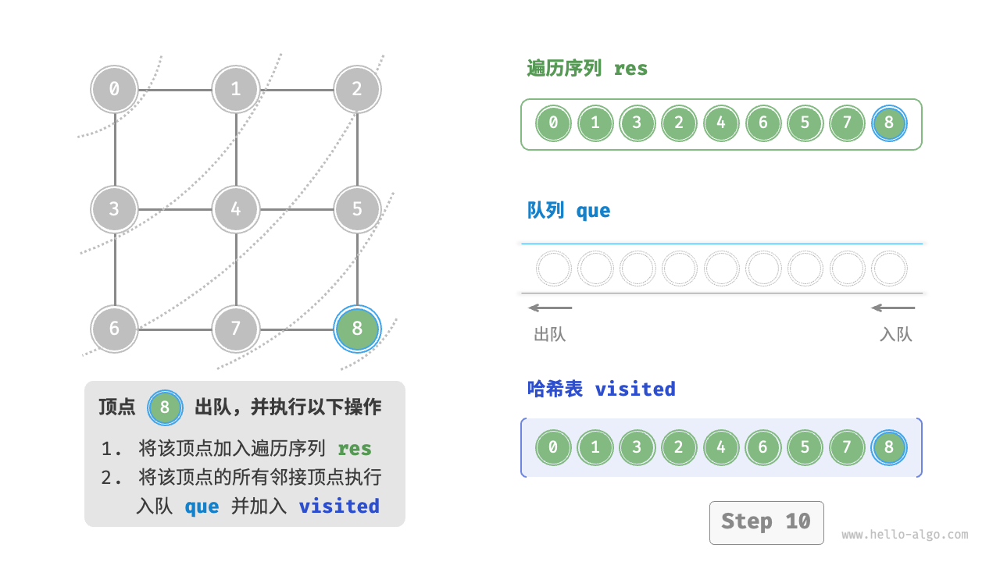
"<11>" 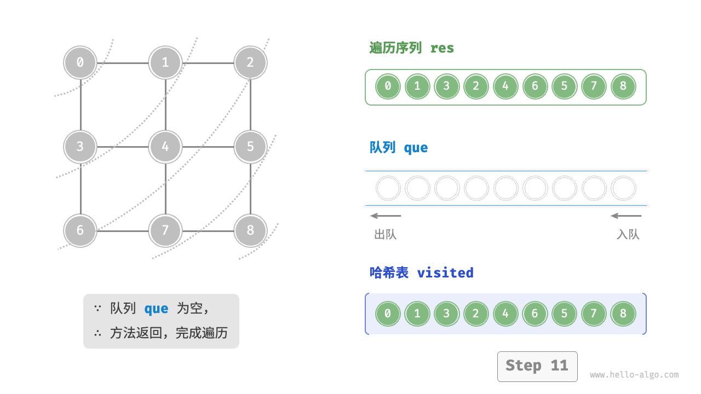
!!! question "广度优先遍历的序列是否唯一？"
不唯一。广度优先遍历只要求按“由近及远”的顺序遍历，**而多个相同距离的顶点的遍历顺序允许被任意打乱**。以上图为例，顶点 $1$、$3$ 的访问顺序可以交换，顶点 $2$、$4$、$6$ 的访问顺序也可以任意交换。
复杂度分析
时间复杂度：所有顶点都会入队并出队一次，使用 $O(|V|)$ 时间；在遍历邻接顶点的过程中，由于是无向图，因此所有边都会被访问 $2$ 次，使用 $O(2|E|)$ 时间；总体使用 $O(|V| + |E|)$ 时间。
空间复杂度：列表 res ，哈希表 visited ，队列 que 中的顶点数量最多为 $|V|$ ，使用 $O(|V|)$ 空间。
深度优先遍历
深度优先遍历是一种优先走到底、无路可走再回头的遍历方式。如下图所示，从左上角顶点出发，访问当前顶点的某个邻接顶点，直到走到尽头时返回，再继续走到尽头并返回，以此类推，直至所有顶点遍历完成。
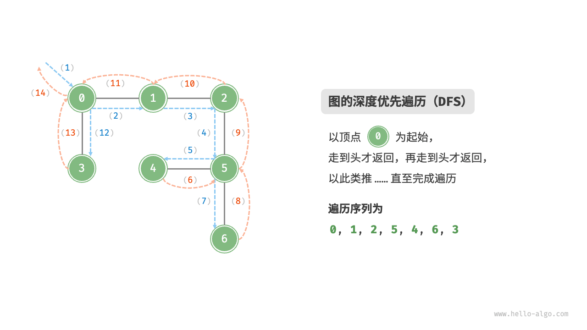
算法实现
这种“走到尽头再返回”的算法范式通常基于递归来实现。与广度优先遍历类似，在深度优先遍历中，我们也需要借助一个哈希表 visited 来记录已被访问的顶点，以避免重复访问顶点。
- "Python"
```python
def dfs(graph: GraphAdjList, visited: set[Vertex], res: list[Vertex], vet: Vertex):
"""深度优先遍历辅助函数"""
res.append(vet) // 记录访问顶点
visited.add(vet) // 标记该顶点已被访问
// 遍历该顶点的所有邻接顶点
for adjVet in graph.adj_list[vet]:
if adjVet in visited: continue // 跳过已被访问的顶点 // 递归访问邻接顶点 dfs(graph, visited, res, adjVet)
def graph_dfs(graph: GraphAdjList, start_vet: Vertex) -> list[Vertex]: """深度优先遍历""" // 使用邻接表来表示图，以便获取指定顶点的所有邻接顶点 // 顶点遍历序列 res = [] // 哈希表，用于记录已被访问过的顶点 visited = setVertex dfs(graph, visited, res, start_vet) return res
- "C++"
```cpp
/* 深度优先遍历辅助函数 */
void dfs(GraphAdjList &graph, unordered_set<Vertex *> &visited, vector<Vertex *> &res, Vertex *vet) {
res.push_back(vet); // 记录访问顶点
visited.emplace(vet); // 标记该顶点已被访问
// 遍历该顶点的所有邻接顶点
for (Vertex *adjVet : graph.adjList[vet]) {
if (visited.count(adjVet))
continue; // 跳过已被访问的顶点
// 递归访问邻接顶点
dfs(graph, visited, res, adjVet);
}
}
/* 深度优先遍历 */
// 使用邻接表来表示图，以便获取指定顶点的所有邻接顶点
vector<Vertex *> graphDFS(GraphAdjList &graph, Vertex *startVet) {
// 顶点遍历序列
vector<Vertex *> res;
// 哈希表，用于记录已被访问过的顶点
unordered_set<Vertex *> visited;
dfs(graph, visited, res, startVet);
return res;
}
- "Java"
```java
/ 深度优先遍历辅助函数 /
void dfs(GraphAdjList graph, Set
visited, List res, Vertex vet) { res.add(vet); // 记录访问顶点 visited.add(vet); // 标记该顶点已被访问 // 遍历该顶点的所有邻接顶点 for (Vertex adjVet : graph.adjList.get(vet)) {
} }if (visited.contains(adjVet)) continue; // 跳过已被访问的顶点 // 递归访问邻接顶点 dfs(graph, visited, res, adjVet);
/ 深度优先遍历 /
// 使用邻接表来表示图，以便获取指定顶点的所有邻接顶点
List
深度优先遍历的算法流程如下图所示。
- 直虚线代表向下递推，表示开启了一个新的递归方法来访问新顶点。
- 曲虚线代表向上回溯，表示此递归方法已经返回，回溯到了开启此方法的位置。
为了加深理解，建议将下图与代码结合起来，在脑中模拟（或者用笔画下来）整个 DFS 过程，包括每个递归方法何时开启、何时返回。
"<1>" 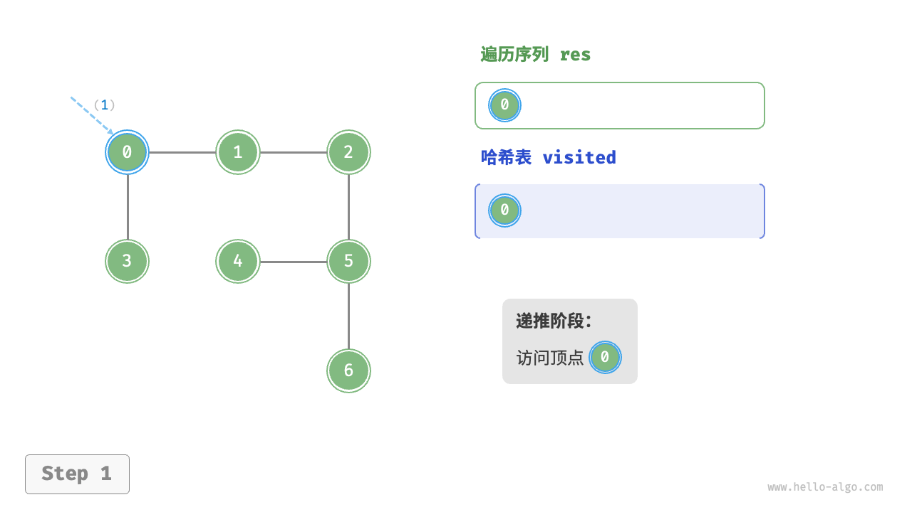
"<2>" 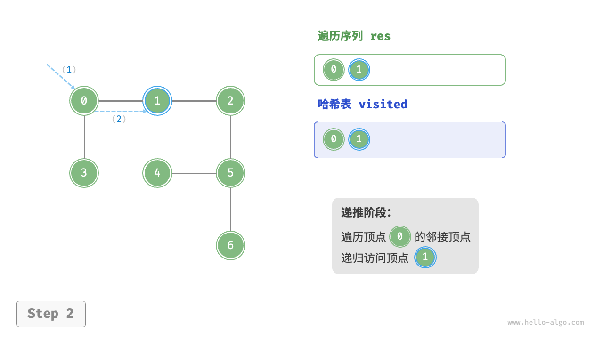
"<3>" 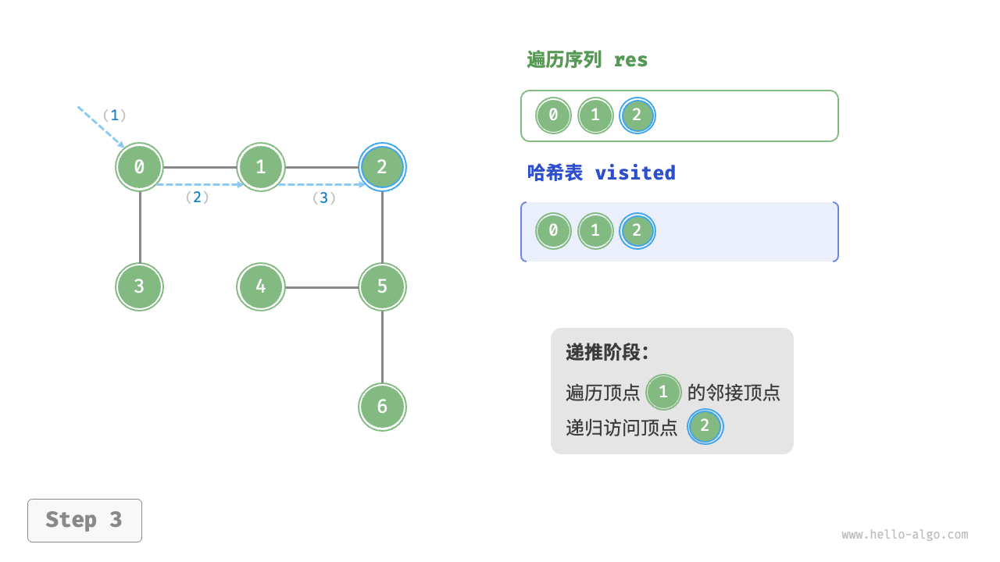
"<4>" 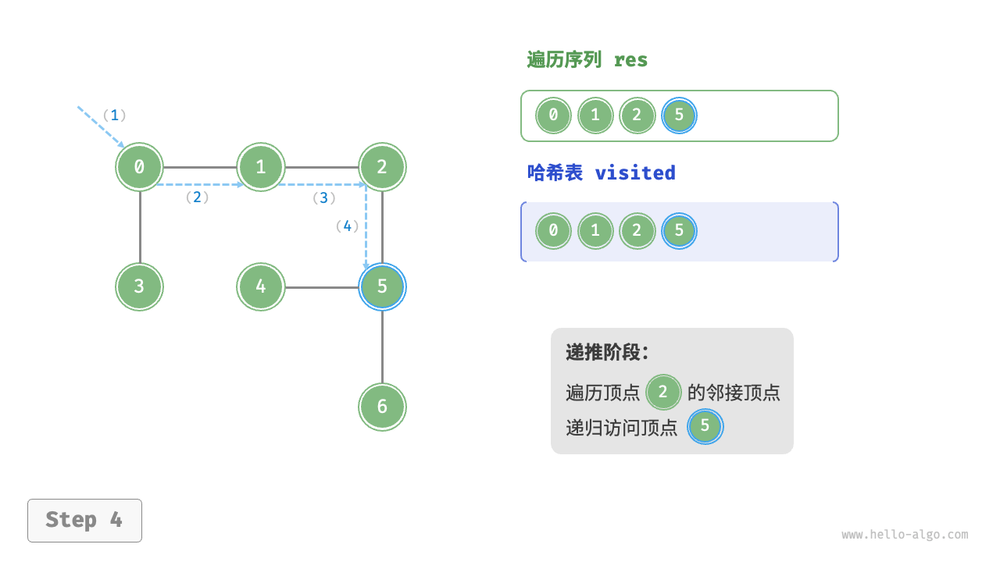
"<5>" 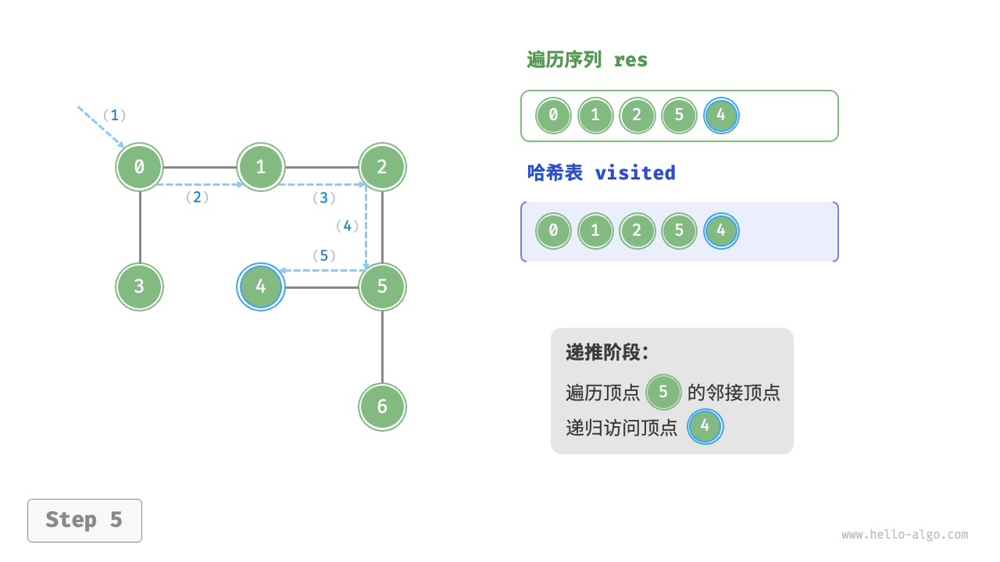
"<6>" 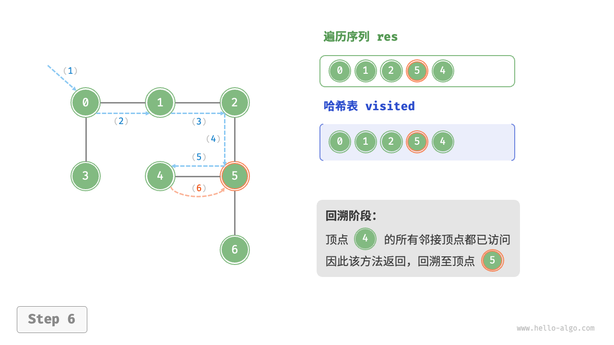
"<7>" 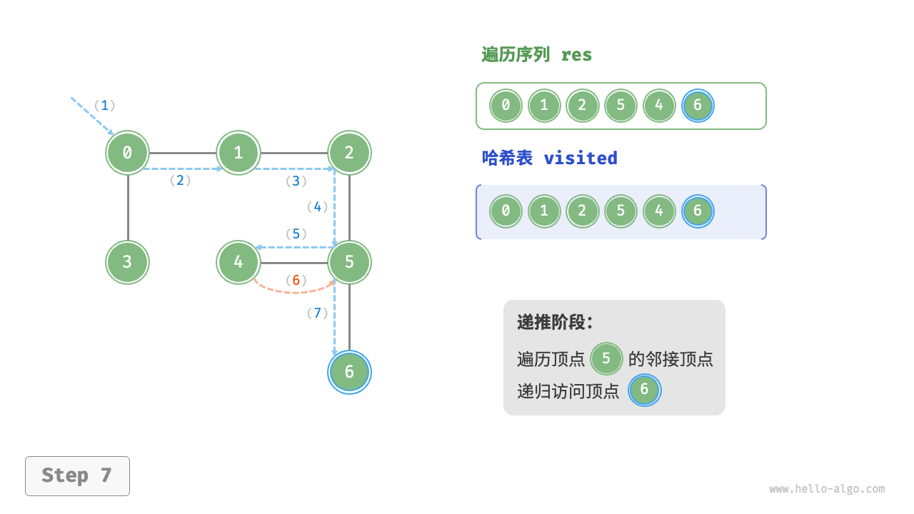
"<8>" 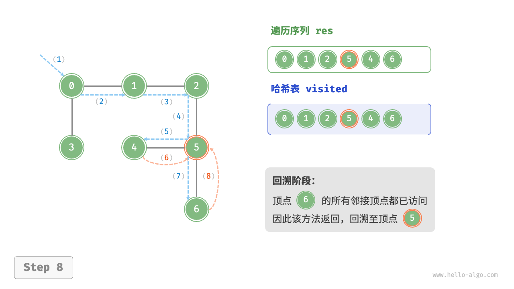
"<9>" 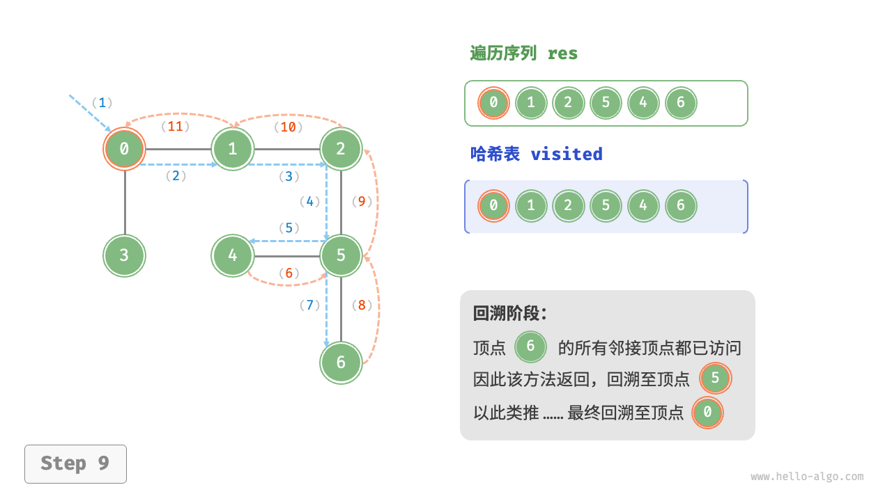
"<10>" 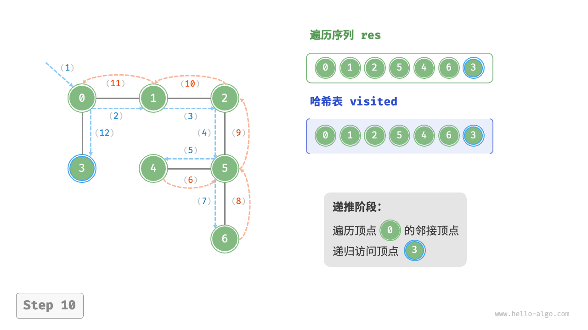
"<11>" 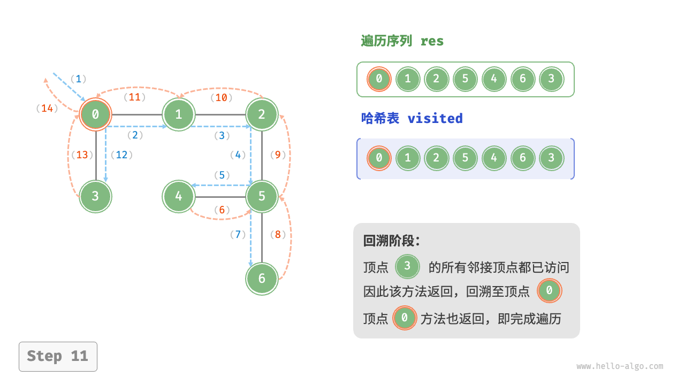
!!! question "深度优先遍历的序列是否唯一？"
与广度优先遍历类似，深度优先遍历序列的顺序也不是唯一的。给定某顶点，先往哪个方向探索都可以，即邻接顶点的顺序可以任意打乱，都是深度优先遍历。
以树的遍历为例，“根 $\rightarrow$ 左 $\rightarrow$ 右”“左 $\rightarrow$ 根 $\rightarrow$ 右”“左 $\rightarrow$ 右 $\rightarrow$ 根”分别对应前序、中序、后序遍历，它们展示了三种遍历优先级，然而这三者都属于深度优先遍历。
复杂度分析
时间复杂度：所有顶点都会被访问 $1$ 次，使用 $O(|V|)$ 时间；所有边都会被访问 $2$ 次，使用 $O(2|E|)$ 时间；总体使用 $O(|V| + |E|)$ 时间。
空间复杂度：列表 res ，哈希表 visited 顶点数量最多为 $|V|$ ，递归深度最大为 $|V|$ ，因此使用 $O(|V|)$ 空间。